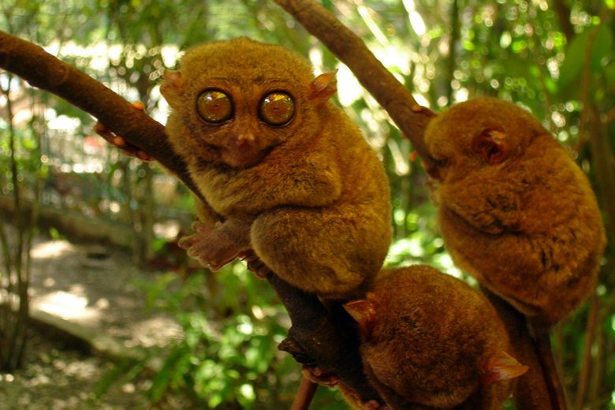

HOME
*Philippines Best Spots*
Welcome to the Pearl of the Orient Seas
The Philippine Tarsier Sanctuary is an eco-tourism destination located in Corella, Bohol. It is where you can see and visit the smallest primates that are mostly found in Southeast Asia — tarsiers.
This tourist attraction also has a visitor’s complex with an exhibition area, cafeteria, audiovisual room, research center full of tarsier-related information, library, conference rooms, and more that you can check to learn more about these small creatures.
The Philippine Tarsier Foundation established the Tarsier sanctuary to protect these endangered species while also promoting eco-friendly tourism. Although organized entirely by local businessmen, the refuge is strongly supported by the Philippines' Department of Tourism and the Department of Environment & Natural Resources.

Back